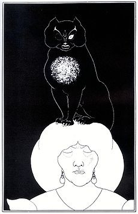

| Livro |
Descrição do Livro |
|
Edição de luxo, ilustrada, com capa dura e sobrecapa. Contos de imaginação e mistério apresenta 22 magníficas histórias de suspense, repletas de cenários lúgubres, clima sobrenatural e de horror. Narrativas célebres como “Os assassinatos da Rue Morgue” (sobre o mistério do brutal assassinato de duas mulheres em Paris, investigado e solucionado pelo detetive Dupin), “O poço e o pêndulo” (sobre um herege preso e torturado pela Inquisição) e “A queda da casa Usher” (o narrador, hóspede da lúgubre mansão, descreve a melancólica estranha decadência de uma família) estão ao lado de outras menos conhecidas ou citadas, mas nem por isso menos brilhantes: “Os fatos do caso do sr. Valdemar” (no qual o protagonista permanece hipnotizado enquanto morre, podendo assim “assistir” à própria morte), “Silêncio: uma fábula” (longo diálogo entre o demônio e o narrador) e “Leonizando” (narrativa de viés absurdo, em que a personagem e obcecada pelo estudo do nariz). |
|
Roderick Usher está gravemente doente e, para tentar trazer algum alívio de sua enfermidade, envia uma carta a um amigo de infância, convidando-o para que viesse lhe fazer companhia. O amigo, ao chegar à casa em que morava Usher e sua irmã, Lady Madeline, encontra um ambiente gélido e sombrio, onde a racionalidade se desmancha, e passa a acompanhar a degradação mental dos dois irmãos enquanto a casa partilha do mesmo destino de seus proprietários.
Com apresentação de Luiz Antonio Aguiar, este conto faz parte do livro "Góticos: Contos Clássicos - Vampiros, Múmias, Fantasmas e Outros Astros da Literatura de Terror", primeiro volume da Coleção Góticos. |
|  |
O Gato Preto (em inglês: The Black Cat) é um conto de Edgar Allan Poe. Foi publicado em uma edição do Saturday Evening Post de 19 de agosto de 1843. É um estudo da psicologia da culpa, também comparado ao conto "The Tell-Tale Heart", também de Poe. |